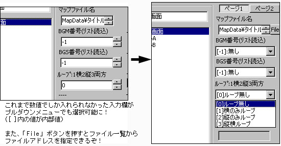
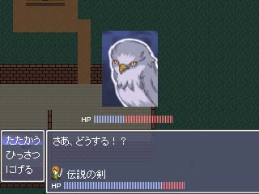
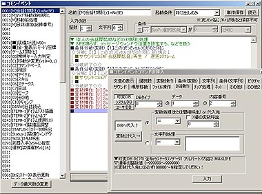
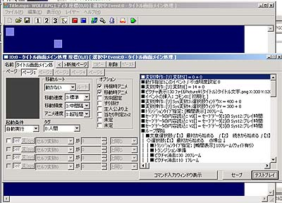
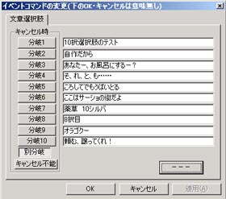

シルバーセカンド開発日誌
■
2007-10-17 (水) WOLFエディター大改造▼ウディタ最新版をアップしました。
初めての人、新サンプルゲームを見たい人は↓をダウンロード！
WOLF RPGエディターα フルパッケージ(ver0.80) 2.5MB
すでに入れてある人、exe3つだけ上書きしたい人は↓から！
WOLF RPGエディターα exeのみ(ver0.80) 1.2MB
バージョンアップの際は、Editor.exeとGame.exe、Config.exeの
3つだけをこれまでのデータに上書きしてください。
（元あったWolfRPGEditor.exeとRPG.exeの2つを削除してください）
※10/22現在、既知のバグ … 文字入力時、半角￥を入力すると停止する
RPGツクールVXの情報が明らかになりつつある中、それに
対抗意識を燃やしてWOLF RPGエディターを大改造しました。
知らない間にプログラム技術が向上していたおかげか
これまで無理だと思っていたことが驚くほど
簡単に実現できるようになっていたので、
使いにくかった部分やツクールに負けていた部分を
色々パワーアップさせています。
【Ver0.74→0.80の変更点】
※注意：データベースのフォーマットを大幅に変更したため、
データベース破損が起きるバグが存在する可能性があります。
一通り危険なバグはつぶしましたが、万が一に備えて
Data￥BasicData内のデータ（DB系）の
バックアップを取ることを推奨します。
・新サンプルゲームに、新機能紹介やウディタ特有の機能紹介を追加。
・実行ファイル名を変更。RPG.exeがGame.exeに、
WolfRPGEditor.exeがEditor.exeになりました。
RPG.datやRPG.iniもそれぞれGame.dat、Game.iniに変更されましたが、
これらはEditor.exeを起動すると自動でファイル名が変更されます。
※すでに開発中のゲームに実行ファイルを上書きする場合は
Game.exeとEditor.exe、Config.exeを自作品のフォルダにコピーし、
元あったWolfRPGEditor.exeとRPG.exeの2つを削除してください。
【新機能】
・[変数操作]
プルダウンメニューからの変数の読み込みを可能にしました。
これで2000000だとかいちいち長い数値を入れなくとも
簡単に変数を読み込むことができます。
・[変数操作] 可変DBに直接書き込みできるようにしました。

変数操作の強化内容、クリックで原寸大
・[ピクチャ]
簡単に指定サイズのウィンドウを生成できる機能を追加、
48×48ピクセルか96x96ピクセルのベース画像が必要です。
（新サンプルゲーム内の女装エシュターに話しかけると
この機能のサンプルを確認することができます）
・[ピクチャ]
パターンや拡大率、カラーなどに「同値」のボタンを追加しました。
これをオンにすると、その値を前と変化させずに
ピクチャ移動ができます。
・[イベントエディタ、コモンイベントエディタ]
チェックポイント機能を追加。
イベント内にチェックポイントを入れると
そこまでボタン一発でジャンプすることができます。
長いイベントの管理に便利です。
・[■動作指定]
「指定座標に接近」コマンドと「指定イベントに接近」コマンドを追加
・[DB全般] 入力機能を強化
ファイルアドレスをファイル一覧から選べるようにしたり、
別DBのデータ名を見ながらプルダウンリストで値を入れたり、
あらかじめ入力しておいた選択肢の中から
値を選ぶことができるようになりました。
このDB新機能の使用例は、新サンプルゲームをEditor.exeで起動して
システムDBを開くと一通り確認することができます。
・[DB全般] 数値変数に「初期値」を設定できるようにしました。
初期値設定後、既存のデータをDelキーやXキーで削除した場合、
またはデータ数を増やした場合などに数値が初期値に設定されます。

DBの強化内容、クリックで原寸大
※新サンプル中のシステムDBで設定されている
プルダウンメニューなどは「タイプの内容設定」で
設定されているものなので、自分のゲームでこれらを適用する場合は
自ら「タイプの内容設定」で設定しなおすか、
もしくは今のシステムDBの中身が消えてもよいのならば
サンプル中のBasicDataフォルダ中にある
SysDatabase.datとSysDatabase.projectを
自分のゲームに上書きしてください。
・文章の制御文字に要望があったものを追加（￥は半角です）
￥! … 次のキー入力まで文章表示を停止
￥. … 0.25秒ウェイト
￥^ … キー入力を待たずに文章表示を終了する
￥sp[A] (※Aは数値）… 以降の文字速度を秒間??文字に変更する
￥r[文字,ルビ内容] … 「文字」に「ルビ内容」のルビを付けて表示する。
ルビの文字色として、システムDBタイプ12（文字色）の
データ13番目の色を読み込みます。
￥self[A] (※Aは0～9までの数値）：
このマップイベントのセルフ変数A番の値を表示します
￥cself[A] (※Aは0～9までの数値）：
このコモンイベントのセルフ変数A番の値を表示します
（A=0～4なら数値、A=5～9なら文字列を返す）
￥udb[A:B:C] (※A～Cは数値）：
ユーザDBの「タイプA番・データB番・項目C番」の内容を表示
￥cdb[A:B:C] (※A～Cは数値）：
可変DBの「タイプA番・データB番・項目C番」の内容を表示
￥sdb[A:B:C] (※A～Cは数値）：
システムDBの「タイプA番・データB番・項目C番」の内容を表示
※これらDB読み込み用制御文字に関しては、変数読み込み文字を使って
「 ￥udb[3]:￥v[4]:￥self[1]] 」という風に入れても機能します。
※制御文字は全て半角、小文字で入力してください。
[Editor.exeの修正点]
・[イベントエディタ]
Bキーで「イベントコマンドの修正」を行えるように変更
・[変数操作]
「クリア」ボタンを追加
・[コモンイベント]
キャンセルしても全然戻っていなかったバグを修正
・[データベース]
キャンセルしても全然戻っていなかったバグを修正 ■
2007-10-09 (火) RPGツクールVX▼RPGツクールはXPで終わりかなあと思っていたら、
なんとRPGツクールVXの情報が発表されました！
（公式紹介ページ）
http://www.watch.impress.co.jp/game/docs/20071009/rpgt.htm
（impressさんの紹介記事）
現在の情報の範囲では、
厳しさが搭載されていたRPGツクールXPに対し、
RPGツクール2000までに存在した便利機能を
取り戻した感じのツールのように見えます。
2ヶ月後にRPGツクールの新作が出るならわざわざ慌てて
ウディタなんか公開しなくたって良かったじゃん！
と思ってしまいました。
マニア向けすぎるという点で
どう考えてもウディタは盛り上がらないので、
アマチュアゲーム界にゲーム創作の風を吹かせるのは
もうエンターブレインさんにお任せかなあ、という感じで見ています。
これでまたツクール作品が増えれば、どんどん
アマチュアゲーム界も盛り上がっていいなあと思うのですが、
いまだにRPGツクール2000作品がコロコロ出ているところを見ると
解像度や処理負荷的に少しキツいのかなあという感じも
否めない今日この頃。
何はともあれ、RPGツクールさんが道をつないでくれてるので、
WOLF RPGエディターは逆にこれからもマニアックで渋い機能を
どんどん充実させていきたい所存です！
なお、今もアクションゲーム
「モノリスフィア」をちょこちょこ進行中です。
別の新作のネタ集めやら、シルフェイド見聞録の
WOLF RPGエディター化リメイクも含めて細かい作業も並行しています。
しばらくはゲームは何も出ないと思いますので、
暖かく見守ってくださると幸いです。 ■
2007-09-20 (木) WOLFエディター修正3▼
WOLF RPGエディターα (ver0.74) 1.5MB(修正点は以下参照)
バージョンアップの際は、WolfRPGEditor.exeとRPG.exeの2つだけを
これまでのデータに上書きしてください。
[ver0.735→0.74の修正点]
【機能拡張・変更点】
・イベントページのコピー＆ペースト機能を実装
・マップエディット中、マウスを中クリックしながら
ドラッグさせることで画面をスクロールできるようになりました
・解凍時のフォルダ名が「WOLF RPGエディター」に変わりました。
【WolfRPGEditor.exe エディター部のバグ修正】
・[変数操作＋] キャラクター欄にて、
マップイベントの操作時にも関わらず、イベントのセルフ変数が
「コモン」セルフ変数になっていたミスを修正
・[■動作指定] 変数操作時、「このEvのセルフ変数」への指定が
うまくいっていなかったのを修正
・[その他1] 「データ更新」を押しても機能していなかったのを修正
・「タイルセットエディタ」のクリック判定が微妙にズレていたのを修正
・ファイル→新規作成 では新しいマップが作成されなかったのを修正
【RPG.exe ゲーム動作部のバグ修正】
・画面の一番上(Y座標が0)の場所に移動できないバグを修正
・ループの向こう側にいるキャラの影の表示が変になるバグを修正
・ループを繰り返すと主人公位置がおかしくなっていくバグを修正
ただループ関連の処理については自信がないので、
また新たにおかしな現象があればご報告下さいますと助かります。
ということで、イベントページのコピー＆ペーストや
真ん中クリックスクロール機能、ループのバグ改善など、
足りなかった基本機能が揃いつつあります。
ただ、まともに使ってくださっている方がおられるかどうかは
まだ分かりません。ある程度ウディタ作品が生まれれば
使ってくださる方も増えるんじゃないかなあとは思うんですけれど。
そもそも自分がまともにウディタで作品を作ってないので
人のことも言えませんし。とほほ。■
2007-09-09 (日) WOLFエディター続報2▼
※9/9 15:00以前にアップしていたバージョン0.73では
RPG.exeにて決定キーによるイベント実行ができません。
以下の0.735を再ダウンロードしてご利用下さい。
WOLF RPGエディターα (ver0.735) 1.5MB
[ver0.72→0.735の修正点]
【WolfRPGEditor.exe エディター部のバグ】
・コモンイベントで「キー入力」使用時、代入先を通常変数にすると、
次に修正しようとした際に選択項目が5つズレるバグを修正
・「セーブデータの書き込み」がダブルクリックで
修正できなかったのを修正
【RPG.exe 動作部のバグ】
・決定キーでイベントが実行できないバグ修正(0.73→0.735)
・ループ周りのバグ
+ イベントの移動がループされていなかったのを修正
+ ループの境界の向こうのキャラが消えるのを修正
・イベントの場所移動時に挙動がおかしかったのを修正
・「半歩上に設置」チェックを入れても2ページ以上にすると認識しない
↓
【修正後】
マップに入った瞬間に、実行条件を満たしているイベントページの
「半歩上に設置」チェックのみが適用されるようになりました。
もしどれも実行条件を満たさない場合は1ページ目のチェックを適用。
【新機能】 変数でキャラを指定できるようになった
・[■動作指定] (変数番号)のキャラを動作指定できるようにました。
・[変数操作+] (変数番号)のキャラのX､Y座標等の取得が可能になりました
（どちらも、キャラ選択欄の下の方に「通常変数」を追加しています）
なお、変数の値とキャラの対応付けは、
「-1＝このイベント」「-2=主人公」「-3＝仲間2」「-4＝仲間3」……
となっており、0以上の場合は「各々のIDのイベント」に対応します。
（例：通常変数0番に「3」を入れて「通常変数0番」で動作指定すると、
イベントID3番のキャラが動く、という具合です）■
2007-08-31 (金) WOLFエディター続報1▼
α版を公開しましたが、早速使ってみますーという方が
いらっしゃって、とても嬉しい限りです。
いくつかバグ修正しました。
WOLF RPGエディターα (ver0.72) 1.4MB
[ver0.71→0.72の修正点]
・「イベント接触」の起動条件が機能していなかったのを修正
・フルスクリーン時にマウスカーソルが出ないよう修正
下の記事で書き忘れていた点があったのでここに列挙します。
（これらの内容は今回更新時の指南書に追加済みです） ▼追記を開く▼
【マップチップの規格】
320x240は1マス16x16ピクセル
640x480は1マス32x32ピクセルで、
配置の仕方は横8マス×高さ∞マスとなります
（ツクールXP仕様とも言います）
RPGツクール2000用の素材をそのまま使おうとすると
マップがバグってしまうと思うのでご注意下さい。
【キャラクター画像の規格】
・以下は、全て基本設定で「アニメパターンが3パターン」の
場合を想定した説明となっています。
・グラフィックが4方向のときは、横3体×縦4体で配置してください。
4方向の場合、上から「下・左・右・上」向きの画像です。
横に並んだ3体は左から順に「右足前 停止 左足前」の
アニメパターンとなります（8方向の場合も同様）
・8方向の場合は、横6体（パターン数×2）×縦4体で
キャラ配置してください。
8方向の場合、左側の3体は上から「下・左・右・上」向き、
右側の3体は上から「左下・右下・左上・右上」向きとなります。
テンキーの数値の小さい順に上から配置されるとお覚え下さい
（例えば2,4,6,8=下・左・右・上の順）。
・特殊機能として、キャラクター画像のファイル名の末尾を
T.png、TX.pngにすると、停止時の画像と移動時の画像を
一枚の画像に同時に配置することが可能になります。
[T.pngの場合]
もともとの仕様で「右足前 停止 左足前」だった部分が、
「停止 右足前 途中 左足前」の順に配置され、
横4体（パターン数+1）になります。縦は4体のままです。
キャラが移動していない状態では「停止」画像が延々表示され、
動いているときは右三体でアニメーションします。
[TX.pngの場合]
もともとの仕様で「右足前 停止 左足前」だった部分が、
「停止1 停止2 停止3 右足前 途中 左足前」の順に配置され、
横6体(パターン数×2）になります。縦は4体のままです。
キャラが移動してない状態では
「停止2→1→2→3→2→1→…」という順にアニメーションし、
移動中の場合は右三枚でアニメーションします。
・パターン数が5パターンの場合は上の各場合で
横3体だったのを全て横5体に置き換えて考えてください。
【マウス表示について】
フルスクリーンで遊んでいるときもマウスが出っぱなしに
なっていましたが、今回の修正でフルスクリーン時は
マウスカーソルが出ないように修正しました。
【既知の不具合…不透明度255でも画像が透けてしまう】
これはサンプルゲームで再現可能な不具合なのですが、
Configで描画モードを「ソフトウェア」にした上で、
テストの妖精によって「背景を表示」させると、
一部チップの下に背景が透けてしまう現象が発生します。
これは、WOLFエディタに使用しているDXライブラリ側の
問題であるため、現在修正待ちです（バグは報告済み）
どうも、淡い色の画像は不透明度が255にならないようです。
ただ、WOLFエディタのダウンロード数の
微妙っぷりには涙が出てます。
普通のゲームソフトと比べたらそりゃ
みんながみんな使うわけないよなー、という感じもしますし、
こういう系のツール真面目に作るくらいなら普通にゲーム作った方が
サイト的にも（そして商業的にも）有利なのは明らかだと思います。
こちとら元々自分用なので、ついでに皆さんに使っていただけたら
嬉しいなあという感じで全然良いのですが、
利益を得て社員の人達を食べさせなければならない立場の
エンターブレインさんが最近ツクールに
乗り気じゃないっぽいのはちょっと納得できました。
公開してもヒット数がいつも通り（10%増？）なのを見れば一目瞭然。
実はそんなに需要がなーい！
それとも、来客数が増えないのはそもそもウチが
ゲーム配布サイトだからなのかなあ、うーむ。
でも需要は少なくとも、自分が使う限りは改造し続けます。■
2007-08-28 (火) WOLFエディターテスト公開！▼今回はWOLF RPGエディターの機能テスト版をアップします！！
バグ等が残っている可能性は非常に高いのですが、
普通では気付かない程度には修正を行っている…と思います。
WOLF RPGエディターα ver0.70 (サンプルゲーム同梱) 1.4MB
(WOLFエディタ項目の最新日時の記事を参照してください)
解凍して、WolfRPGEditor.exeを実行すると
内容のエディットが可能です。
RPG.exeでゲーム実行できます。
ゼロから作り始めたいという方は、Dataフォルダを消して
「Data（初期状態）」のフォルダを
Dataに名前変更してください。
なおサンプルに含まれている素材は全て二次利用可能です。
なお、ご使用の際には以下の点をご了承下さい（追記） ▼追記を開く▼・このツールはWindows2000、XP、Vista用です。
作成したゲームのプレイ自体は98、Meでも可能ですが、
ツールの方は98、Meだと文字化けして使えません。
また、Win98ではプレイ時にグラフィック表示が
正常に行われない可能性があります。
・かなり上級者向けです。
ある程度ツクールに触ったことのある人が対象。
親切なチュートリアルなどは付いておりません。
また、タイトル画面やデフォルトの戦闘システム、
メニューシステムなども付いていません。
全部自作してください、というスタイルです。
・新機能の提案があっても、その提案が作者的に面白い・有意義だ、
と思わない限りは実装しませんのでご了承下さい。
現状の機能でも工夫すればたいがいの事は実現できると思います。
・現状、説明不足な点も非常に多いと思います。
使用方法についてはまず同梱の指南書を読んでください。
分からないことがあれば同盟掲示板の
「WOLF RPGエディタースレッド」にてご質問をどうぞ。
・アップデートに伴い、それまでのセーブデータが
使用できなくなる可能性が非常に高いです。
ただしマップデータなどやそのデータは
上位バージョンでも使用可能ですので、
作成したデータが使えなくなるという心配はありません。
・カーソル跡が残ったりするのは直せなかったので仕様扱い！
マップエディット中のマップチップ表示が微妙におかしいのも
今のところ仕様扱い！です。ゲームプレイ中は支障ありません。
・画像はアルファチャンネル付きPNGファイルを
使用することを想定しています。
・悪用されると危険な機能や通常では使わないと考えられる機能、
データの暗号化などは、要ライセンス機能として
将来的に実装する予定です。
・ありとあらゆるデータ番号付けが000から始まっているのは
自分用でいいやと思って放置してた名残です！
今さら修正がききませんのでご勘弁下さい。
【目新しい機能一覧】
・数値変数だけでなく、文字列変数を扱えるようになっています。
・文字列をピクチャとして表示することが可能です。
シンプルなスタッフロールなら画像を用意せずに実現可能！
（例：サンプルゲームのスタッフロールなど）
・自作戦闘システムなどを作りやすいよう
「データベース」を自分で作成することができます。
これで自作戦闘システムでは大変だったアイテムや
敵ステータスの整理も楽々！もちろん、それらの処理については
コモンイベント等で作成する必要があります。
・解像度は320x240と640x480の両方から選択可能。
FPS（1秒間の処理回数）も60か30FPSを選べます。
・プレイヤーさんのPCに3D描画チップが内蔵されていれば
ゲーム処理が非常に高速化されます。
なければ重さはRPGツクールXP並みとなります。
・メッセージ表示時の文字サイズの変更や、
ルビの付加などが可能です。
・ピクチャ表示の能力が従来のツクールより遙かに向上。
50枚制限なんてありません！1000枚くらい出しても大丈夫！
（当然、プレイヤーさんのメモリ許容量を超えたら無理ですが）
・コモンイベントをファイルとして出力できます。
これにより、ユーザ同士でシステムを配布、
導入しあうことができるようになっています。
（配布する人がいらっしゃったら、の話ですが！）
などなど、ツクールにはない特徴が盛りだくさんです。
ツクールには物足りない人向け（というか自分向け）に作ったので
粗も目立つと思いますが、こりゃよさそうだ！と思った方には
ぜひ使っていただきたいと思います。■
2007-04-12 (木) WOLFエディタサンプルゲーム▼クリフ迷宮録は中身見ても
さすがにパッと理解するのが難しそうなので
WOLF RPGエディター利用者向けのサンプルゲームを作成しました！
基本的なコモンイベントの組み方の例として作ったものなので、
ゲーム的にはさほど面白いものではありません。

タイトル画面。何てやる気のないサンプルゲームの文字だ！

戦闘は「たたかう（命中95％攻撃力1倍）」と
「ひっさつ（命中60％攻撃力2倍）」、「にげる」だけ！
作る人が参考にするためのサンプルだから単純！
このゲームで使われているグラフィックは
全て すう様作です。
またBGMとしてタクミ様の
素材を使用させていただいております。
素材提供、誠にありがとうございました！
プレイそのものは10分くらいで終わります。
お暇な方はどうぞ。ダウンロードはこちらから↓
『WOLF RPGエディター サンプルゲーム』(1.4MB)
（RPG.exeを起動して下さい。
ゲームがうまく動かない場合は、Config.exeで描画モードを
「ソフトウェアモード」に変更してください） ■
2007-03-25 (日) RPGエディタ作り▼
今週は相変わらずエンターブレインのお仕事やってます。
プレイする人少ないんだろうなーとか思うと
どんどん開発への意欲がなくなっ（ゲホッゲホッ）。
Docomoゲームの開発状況なんて聞いても面白くないと思うので
現在こっそり開発中の自作RPGツクール、もとい
「WOLF RPGエディター」についての情報をチラホラと掲載。
 ▼追記を開く▼このエディタ、現在一部の人（主に私＋もう一人なんですが）に
テストしてもらってる段階で、バグはぷちぷち潰しています。
扱いがややこしい部分がいっぱいあるのですが、分かれば
クリフ迷宮録程度のシロモノならすでに作れる状態です。
でも説明書などは一切作ってないので、
公開したら誰かwikiにまとめてくれ頼む！状態です。
なお、ツクールに最初から付いているような
顔グラフィック表示機能やら戦闘システム、アイテム、
ステータス欄、メニュー画面などは全くないので、
自分で全自作する必要があります。
一見メチャメチャ敷居が高そうですが、
コモンイベントのインポート、エクスポート機能
（あるコモンイベントをファイルとして出力する機能）
を付けているので、他の人が作った自作システムをそのまま
自分のゲームに取り込むことが可能です。
ある程度ツールが流通して「コモンイベント職人」が
現れるくらいになれば、好きなメニューシステムを探して
ゲームに搭載するといったことができるかもしれません。
ちなみに「Xつ下のコモンイベントを読み込む」なんて機能も
搭載しているので、それで処理を統一すれば
コモンイベント複数に渡る巨大システムでも取り込むことが可能です。
RGSSが配布できるならコモンイベントだって配布できるはず！
画面解像度は640x480と320x240を選択可能にする予定です
（現状では640x480のみ）
3D描画機能を持つグラフィックボードがあれば、
CPUが弱くても処理が超絶軽くなります。
このエディターは、RPGツクール2000をある程度使いこなせて
機能や解像度に微妙に不満を持ってる、だけど、
RPGツクールXPは重い、RGSSがちょっと難しい、
という感じの方々をターゲットとしています。
ついでに図らずもVistaで動くらしいことと、
今後OSの進化に伴って私がそれに対応＆改造するかもしれない
というのがメリットです。あと基本機能は無料にします。
これで少しでもアマチュアゲーム界に風が吹けば嬉しいのですけれど。
あと、当然といえば当然なのですが、最大のデメリットは
RPGツクール用素材が一切使えないことです。
画像やMIDIはともかく、効果音を集めるのが大変！
いざツール開発してみると、RPGツクールシリーズって
プログラム部分より素材費の方が絶対高いんじゃないかと思うほど。
一応、データのフォーマットが固まったら公開予定です。
いつになるか分かりませんが、自分がこのツールで
まともに一本作れたら公開しようと思います。
さっきいじってたらクリフ迷宮録が動かなくなりました、オーノー。
ちなみにセーブのフォーマットが今も変わり続けているので、
修正のたびにセーブデータ吹っ飛ばしまくりです。オーノー。■
2006-05-07 (日) ツール＆RPG随時進行中▼
自作ツール＆動作プログラムのバグ出しのために
サンプル的な作品を一本作ろうと考えました。
現在タイトル画面だけ完成！
フリーかどうかは未定です。
ちなみに自作ツールは、タイトル画面から
イベントコマンドで組める仕様。汎用性抜群。

しかしコマンド表（右の部分）の文字に色を付ける方法が
未だに分からないので黒文字オンリーです。
（RPGツクールXPではコマンド別に色が違うので見やすい）
そりゃあっさり実装できるならエンターブレインの人も
RPGツクール2000の時点で
色分けできるようにしてるよね！という感じもします。
なおこのツール、配布するかどうかは未定です。
メニューも戦闘も何もかも自作必須というのも問題ですが、
実際配布するとなると、使い勝手最悪な部分を
どうにかしないといけませんし。
ただ、自分で使っている内にどんどん改造を重ねて
使いやすくなっていくとは思いますので、
もし配布に値するクオリティーになったら
何らかの形で配布しようかなとは思ってます。■
2006-04-23 (日) そろそろアル幻開始？▼
↓

オーバースペックな10択の選択肢！
これだけありゃお店イベントが手動で作れますが、
サーショの街の武器屋でも装備一種類につき
3品しかありません、うーむ。
自作プログラムの方はだいぶ色々と
動かせるようになってきました。
まだちょっと完成には遠いですが、完成できれば
ツクール時代より30%以上は高速で色々と作れそうです。
プログラムができたらグラフィック＆シナリオを開始予定です。
次回作アルバート幻想譚では、すうさんという方に
ドット絵ヘルパーとして手伝っていただけることになったので、
これまでより開発がスピードアップできそうな予感です。
Copyright © SmokingWOLF / Silver Second
 カテゴリ: ウディタ
カテゴリ: ウディタ カテゴリ: ウディタ
カテゴリ: ウディタ